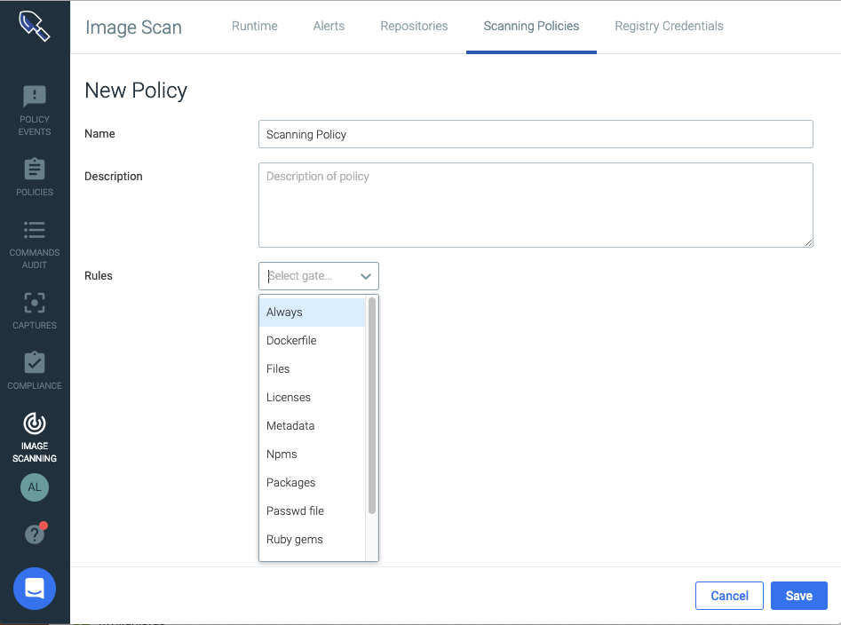
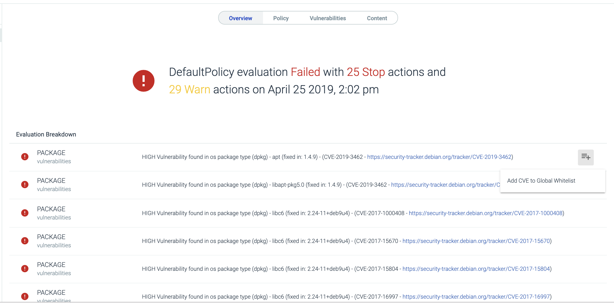
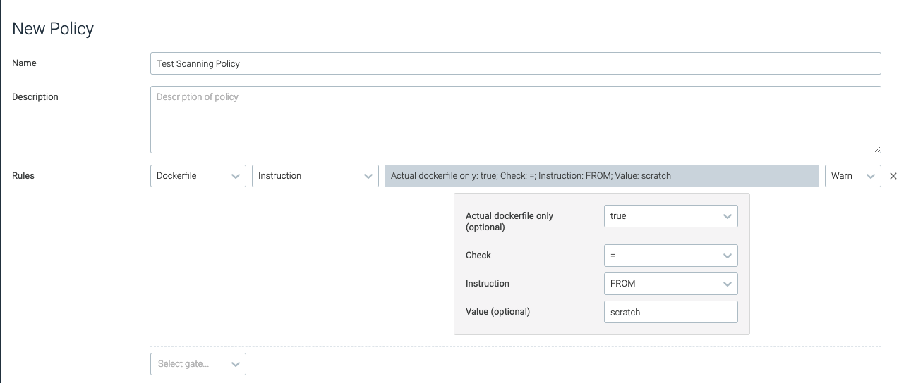
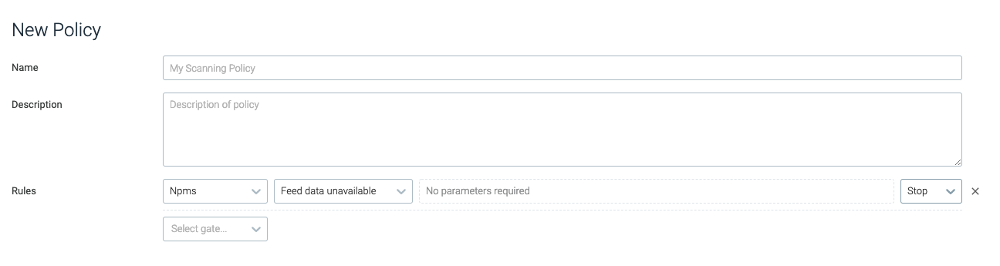
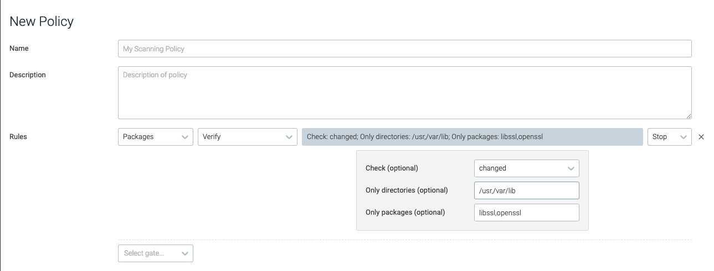
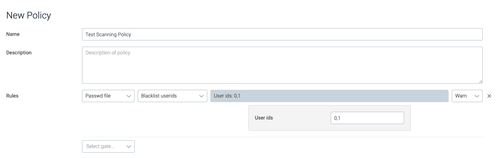

**Manage Scanning Policies**
Image scanning policies define the scenarios in which:
The build process may be stopped, or
Administrators may be alerted to potential risks within container images.
Each scanning policy is comprised of rules built of gates and triggers. Sysdig includes default policies that can be used to run scans as soon as registry credentials have been configured. Users can create additional rules or policies from the available **Scanning Policy Gates and Triggers**.
Contents
Preconfigured Policies
Sysdig provides four baseline policies that can be used as-is or as templates on which to build.
 |
Default Policy
This policy covers the most common image scanning cases, such as:
checking for medium and high vulnerabilities
checking configuration items (e.g., ensuring health checks in an image or disallowing exposed ports)
validating that the vulnerability feed data is up-to-date.
This policy is a basic catch-all that cannot be deleted. If no other policy assignments are made, the Default policy is automatically used.
Tip
You can edit the Default policy and edits will be retained even when you upgrade Sysdig Secure.
Preconfigured Compliance Policies
The three other preconfigured policies deal with compliance rules. To use them, you must add them to the Policy Assignments list.
Warning
If you want to edit a preconfigured compliance policy, create a new policy with matching rules and edit that.
Otherwise, your customizations may be overwritten and lost during Sysdig Secure upgrades.
Configuration Policy - Dockerfile Best Practices
This policy provides out-of-the-box rules around Dockerfile best practices, such as disallowing:
secrets baked in as environment variables
rootuser configurationexposed ports
run instructions that include
.yumupgrades.
Audit Policy - NIST 800-190
This policy maps NIST 800-190 controls to a Sysdig Secure scanning policy, such as disallowing:
non-official node or Ruby packages
addinstructions in a Docker filethe use of base distributions outside of expected values.
Audit Policy - PCI
This policy maps PCI (Payment Card Industry) controls to a Sysdig Secure scanning policy, such as disallowing vulnerabilities or credentials to be included in the image.
Customized Policies
Remember not to edit preconfigured compliance scanning policies directly. Create a matching policy and edit that one.
Create a New Policy
From the
Image Scanningmodule, selectScanning Policiesand clickAdd Policy(+).The New Policy page is displayed.
 Define a
Nameand an optionalDescriptionfor the new policy.Add a
Rule:Select the
Gateand then theTriggerfrom the drop-down menus.Configure relevant parameters. (Some triggers do not require parameters to be set.)
See **Scanning Policy Gates and Triggers** for details on each option.
The example below uses the
vulnerabilitiesgate with thepackagetrigger.
Optional: Repeat step 5 to add rules as necessary.
Click
Save.
Edit an Existing Policy
To edit an existing scanning policy:
From the
Image Scanningmodule, selectScanning Policies.Select the desired policy from the list.
Edit the policy rules as required, and click
Save Policy.
Delete an Existing Policy
To delete an existing scanning policy:
From the
Image Scanningmodule, selectScanning Policies.Select the desired policy from the list.
Click the
Delete(trash can) icon and chooseYesto confirm the change.
Whitelist/Blacklist
You can globally whitelist or blacklist particular images or CVEs, if desired. See **Whitelist | Blacklist CVEs and Images**. This does not affect the policy evaluation order.
Manage Policy Assignments
Unless you use a very simple, single-policy approach to scanning, you will probably assign particular policies to particular registries, repos, or tags. Use the Policy Assignments page to do so.
Assign a Policy
From the
Image Scanningmodule, selectScanning Policiesand choosePolicy Assignments.The previously defined assignments are listed in priority order.

Click
+Add Policy Assignment.A new entry line appears at the top of the Assignment page. Enter the desired assignment details:
Priority: Priority is the order of evaluation against the assigned policy. Each new assignment is auto-placed at Priority 1. Once a policy assignment is created and saved, you can change its priority order by dragging it into a new position on the list. See also Using Priorities.Registry:Any registry domain (e.g. quay.io). Wildcards are supported; an asterisk * specifies any registry.Repository:Any repository (typically = name of the image). Wildcards are supported; an asterisk * specifies any repository.Tag: Any tag. Wildcards are supported; an asterisk * specifies any tag.Assigned Policy: Name of policy to use for evaluation. Select from the drop-down menu.
Click
Save.Optional: Reorganize the Priority order by clicking the drag handle (the four dots to the left of a line) and dragging the assignment to a different spot on the list.
Example Use Cases
To prevent developers from pulling unknown images from a Docker hub, you may want to design a rule for the
docker.io registry,(including all repos and tags), and assign an appropriate policy. <Which gate/ trigger/policuy checks for unknown images?>registry = docker.io repository = * tags = * assigned policy = ?
Organizations commonly tag images as
devorprod. You can apply a tag assignment todevimages by using wildcard.wildcard.dev.
Using Priorities
When you use more than one scanning policy, the Anchore engine evaluates them in top-down order, starting from Priority 1 in the Policy Assignment list. The first policy assignment rule that matches an input image will be evaluated, and all subsequent rules ignored. Therefore, the priority order is important.
Tip
For example, imagine a list with two defined policy assignments:
Priority 1 Registry = quay.io Repository = sysdig/*
Priority 2 Registry = quay.io Repository = sysdig/myrepo
Since the first rule uses a wild card, the evaluation applies to all repos beginning with sysdig/ and will stop before evaluating sysdig/myrepo.
Reverse the priority order to get the behavior you want.
There is a catch-all entry at the bottom of the Policy Assignment list that cannot be removed. It has the format :
registry = * repository = * tag = * assigned policy = default
(You can change the assigned policy, but other fields cannot be edited.)
The purpose of this row is to ensure that any registries that do not fall under another policy evaluation will at least be evaluated against the system-configured Default policy.
**Whitelist | Blacklist CVEs and Images**
Sysdig Secure allows users to define CVEs and images as globally trusted or blacklisted. For example, a low-risk CVE can be globally approved to prevent it from impacting builds that include more critical fixes. Alternatively, specific images can be marked as globally approved or not to ensure they always/never pass a scan.
Note
Blacklist options for other entities, such as users, ports, packages, etc., are listed in **Scanning Policy Gates and Triggers**.
Contents
Review the Whitelisted/Blacklisted CVEs and Images
To review the current list of whitelisted/blacklisted CVEs and images:
From the I
mage Scanningmodule, selectScanning Policies.Click the
Whitelists and Blacklistsbutton.Choose the relevant tab (
CVE Whitelist,Global Trusted Images, orGlobal Blacklisted Images).
Whitelist a CVE
There are two ways to whitelist a CVE - from the Scanning Policies tab, and from the Repositories tab.
From the Scanning Policies Tab:
From the I
mage Scanningmodule, selectScanning Policies.
Click
Whitelists and Blacklists.Click
Add CVE,add each CVE in a comma-separated list, then clickOkto save.Each item in the list must follow the CVE naming format (
CVE-YEAR-ID).
From the Repositories Tab
From the I
mage Scanningmodule, chooseRepositoriesand select one of the listed repos.If there is a policy result related to a vulnerability, you can whitelist that CVE.
Click the
More Options(+) icon beside the relevant CVE. Select
Add CVE to Global Whitelist.
The CVE will now be listed in the CVE Whitelist tab.
Whitelist / Blacklist an Image
Note
If an image is added both in the "Trusted Images" list and in the "Blacklisted Image" list, the blacklisted one takes precedence.
There are two ways to whitelist or blacklist an image - from the Scanning Policies tab, and from the Repositories tab.
From the Scanning Policies tab:
From the I
mage Scanningmodule, selectScanning Policies.Click
Whitelists and Blacklists.Choose the relevant tab (
Global Trusted Images, orGlobal Blacklisted Images) and click theAdd Imagebutton.Add each image in a comma-separated list, then click
Ok.A tag name must be valid ASCII and may contain lowercase and uppercase letters, digits, underscores, periods and dashes.
A tag name may not start with a period or a dash and may contain a maximum of 128 characters.
From the Repositories tab:
From the I
mage Scanningmodule, choose theRepositoriestab.Select the relevant repository from the list and open the relevant image.
Click the
More Options(+) icon at the top of the page:Select either
Add Image to Trusted ImagesorAdd Image to Blacklisted Imagesas needed.
The CVE will now be listed in the Global Trusted Images tab or Global Blacklisted Images tab, as appropriate.
Remove a CVE or Image from the Whitelist/Blacklist
To remove one or more CVEs or Images from the various lists:
From the I
mage Scanningmodule, selectScanning Policies.Click
Whitelists and Blacklists.Navigate to the relevant tab (
CVE Whitelist,Global Trusted Images, orGlobal Blacklisted Images).Click the
Delete(X) icon beside the relevant CVEs/images
Click
Save.
**Scanning Policy Gates and Triggers**
This document described the current gates and their respective triggers/parameters in Sysdig Secure scanning policies.
These policy gates, triggers, and parameters can be used to build in-depth scanning policies, from whitelisting / blacklisting partial file names to defining what login shells are approved.
Note
This information can also be obtained using the CLI:
user@host:~$ anchore-cli policy describe (--gate <gatename> (--trigger <triggername))
Contents
Always
This gate provides users with a valuable testing resource, as it will be triggered unconditionally.
always
The always trigger / gate will trip if it is present in the policy.
Note
The Always gate is useful for testing whether the image blacklist/whitelist is working as expected.
 |
Dockerfile
The dockerfile gate reviews the contents of a dockerfile, or the assumed contents of a dockerfile if one is not provided, for exposed ports and instructions that do not follow best practices.
Note
The gate assumes what the contents would be based on the docker layer history.
effective_user
This trigger reviews whether the effective user matches the user provided, and will fire based on the configured type.
Parameter | Description | Example |
|---|---|---|
| Determines whether the user should be whitelisted or blacklisted. | N/A |
| The name of the user. | root,docker |
exposed_ports
This trigger evaluates the set of exposed ports to determine whether they should be whitelisted or blacklisted.
Parameter | Description | Example |
|---|---|---|
| Defines whether the evaluation should skip inferred or guessed dockerfiles, and only evaluate user-provided dockerfiles. The default value is | true |
| A comma-separated list of port numbers. | 80,8080,8088 |
| Defines whether the ports should be whitelisted or blacklisted. | N/A |
 |
instruction
This trigger evaluates whether any directives / instructions in the list match the conditions in the dockerfile.
Parameter | Description | Example |
|---|---|---|
| Defines whether the evaluation should skip inferred or guessed dockerfiles, and only evaluate user-provided dockerfiles. The default value is | true |
| The type of check to perform. | = |
| The dockerfile instruction to check. | FROM |
| The value to check the dockerfile instruction against. | scratch |
|  |
no_dockerfile_provided
This trigger will trip if there is no dockerfile supplied with the image. No parameters are required for this trigger.
 |
Files
The Files gate reviews files within the analyzed image. This evaluation covers file content, names, and filesystem attributes.
content_regex_match
This trigger is tripped for each file where a match has been found using the configured regex in the analyzer_config.yaml content_search section.
Note
For more information regarding the regex values, refer to the analyzer_config.yaml file.
Parameter | Description | Example |
|---|---|---|
| The regex string that appears in the | .*password.* |
name_match
This trigger is tripped if the name of a file in the container matches the provided regex.
Note
This trigger has a performance impact on policy evaluation.
Parameter | Description | Example |
|---|---|---|
| The regex to search for. | .*\.pem |
 |
suid_or_guid_set
This trigger is tripped for each file that has a set-user identification (SUID) or set-group identification (SGID) configured. No parameters are required.
 |
Licenses
This gate is used to review software licenses found in the container image, to ensure, for example, that packages that violate internal company policy are not being used.
blacklist_exact_match
This trigger will be tripped if the image contains packages distributed under the exact license specified.
Parameter | Description | Example |
|---|---|---|
| A comma-separated list of license names to blacklist. | GPLv2+,GPL-3+,BSD-2-clause |
 |
blacklist_partial_match
This trigger will be tripped if the image contains packages distributed under a license that includes the partial strings provided.
Parameter | Description | Example |
|---|---|---|
| A comma-separated list of strings to blacklist for licenses. | LGPL,BSD |
 |
Metadata
This gate reviews image metadata, including the size, operating system, and architecture.
attribute
The attribute trigger is tripped if a named image metadata value matches the given condition.
Parameter | Description | Example |
|---|---|---|
| The attribute name to check. | size |
| The operation to perform for the evaluation. | > |
| The value used for the evaluation. | 1073741824 |
 |
NPMs
The NPMs gate reviews any images that have NPM packages installed.
blacklisted_name_version
This trigger is tripped if the evaluated image has an NPM package installed that has been blacklisted, either by name or optionally by name and version.
Parameter | Description | Example |
|---|---|---|
| The name of the blacklisted NPM package. | time_diff |
| The specific version of the NPM package to blacklist. | 0.2.9 |
 |
feed_data_unavailable
This trigger is tripped if the engine does not have access to the NPM data feed. No parameters are required.
|  |
newer_version_in_feed
This trigger is tripped if the NPM data feed lists a newer version of the package. No parameters are required.
 |
unknown_in_feeds
This trigger is tripped if the NPM installed is not in the official NPM database. No parameters are required.
version_not_in_feeds
This trigger is tripped if the NPM version is not listed as a valid version in the official NPM feed. No parameters are required.
 |
Packages
The Packages gate reviews all packages within the image, verifying names, versions, and whitelisted / blacklisted packages.
blacklist
This trigger is tripped if the image contains packages that have been blacklisted by either name, or name and version.
Parameter | Description | Example |
|---|---|---|
| The name of blacklisted package/s. | openssh-server |
| The exact version of the package that should be blacklisted. | 1.0.1 |
 |
required_package
The required_package trigger is tripped if the specified package / version is not found in the image.
Parameter | Description | Example |
|---|---|---|
| The name of the required package. | libssl |
| The required package version. | 1.10.3rc3 |
| Defines whether the trigger should require the exact package and version (exact), or just a version of the package (minimum). This is only relevant if the version is defined. | exact |
 |
verify
This trigger reviews the package integrity against the package database in the image, and is tripped for change or removal of content in either all or a defined list of directories provided.
Parameter | Description | Example |
|---|---|---|
| Defines whether the check should focus on missing packages, changed packages, or all. | changed |
| Defines the list of directories the check should be limited to. | /usr,/var/lib |
| Defines the list of packages that should be verified. | libssl,openssl |
|  |
Passwd File
This gate reviews /etc/passwd for blacklisted users, groups, and shells.
blacklist_full_entry
This trigger trips if the whole password is found in the /etc/password file.
Parameter | Description | Example |
|---|---|---|
| The full entry to match in | ftp:x:14:50:FTP User:/var/ftp:/sbin/nologin |
 |
blacklist_groupids
This trigger is tripped if the designated group id/s are found in the /etc/passwd file.
Parameter | Description | Example |
|---|---|---|
| A numeric, comma separated list of group ids that will cause the trigger to trip. | 999,20 |
 |
blacklist_shells
This trigger will trip if a designated login shell is found under any user in the /etc/passwd file.
Parameter | Description | Example |
|---|---|---|
| The list of shell commands to blacklist. | /bin/bash,/bin/zsh |
 |
blacklist_userids
This trigger will be tripped if the specified user ID is present in /etc/passwd.
Parameter | Description | Example |
|---|---|---|
| The numerical, comma-separated list of user IDs to blacklist. | 0,1 |
|  |
blacklist_usernames
The blacklist_usernames trigger will trip if the specified username is found in the /etc/passwd file.
Parameter | Description | Example |
|---|---|---|
| A comma-separated list of usernames to blacklist. | daemon,ftp |
 |
content_not_available
The content_not_available trigger will trip if the /etc/passwd file is not present in the image. No parameters are required.
 |
Ruby Gems
The Ruby Gems gate ensures that developers are using official packages from the official GEM database, and are not using versions of packages that are no longer supported.
blacklist
The blacklist trigger trips if a GEM package that matches the configured name and version is found in the evaluated image.
Parameter | Description | Example |
|---|---|---|
| The name of the gem. | time_diff |
| The version of the gem to blacklist. | 0.2.9 |
 |
feed_data_unavailable
This trigger will trip if Sysdig does not have access to the GEM data feed. No parameters are required.
newer_version_found_in_feed
This trigger will trip if an installed GEM package is not the latest version. No parameters are required.
not_found_in_feed
This trigger will trip if an installed GEM is not in the official GEM database. No parameters are required.
 |
version_not_found_in_feed
This trigger will trip if the GEM is not listed in the official GEM feed as a valid / supported version. No parameters are required.
 |
Secret Scans
Secret scans determine, based on configured regex, whether secrets that could be available if an image was compromised have been baked into the image.
content_regex_checks
The content_regex_checks trigger trips if the content search analyzer finds a match with the configured and named regexes. Matches are filtered by the content_regex_name, and the filename_regex, if either are set.
Note
The content_regex_name should be a value from the secret_search section of analyzer_config.yaml.
Parameter | Description | Example |
|---|---|---|
| The name of the variable / content. If found in the image, this should trip the trigger. NoteThe names available by default are | AWS_ACCESS_KEY |
| Filters the files that should be analyzed for the presence of the | /etc/.* |
 |
Vulnerabilities
CVE / vulnerability checks can be used to ensure the included packages don't have vulnerabilities above a set level, are older than a designated period, or if data is unavailable.
package
The package trigger is tripped if a vulnerability in an image matches the configured comparison criteria. The table below outlines the available parameters and criteria:
Parameter | Description | Example |
|---|---|---|
| If present, the fix availability for the vulnerability record must match the value of the parameter. | true |
| The specific type of package. | all |
| The vulnerability severity. | high |
| The type of comparison to perform for the security evaluation. | > |
| If true, an available fix for this CVE must not be explicitly marked as "Won't be addressed by the vendor". | true |
 |
stale_feed_data
The stale_feed_data trigger will be tripped if the CVE data is older than the window specified.
Parameter | Description | Example |
|---|---|---|
| Determines how old in days sync data can be before the trigger is tripped. | 10 |
 |
vulnerability_data_unavailable
If no vulnerability data is available, the vulnerability_data_unavailable trigger will trip. No parameters are required for this trigger.
 |